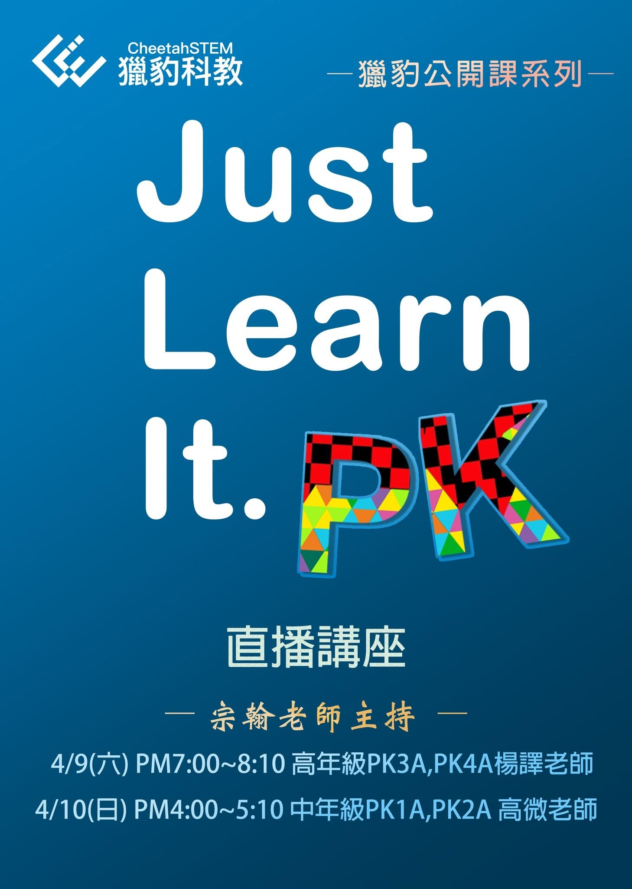

〔獵豹小學數學PK系列 免費公開課〕
報名請底下留言加1和要「都參加」或「中年級」或 「高年級」
一個關於獵豹的誤解：獵豹課程內容很困難艱深，只適合少數程度很好的資優生。
獵豹科教在台灣的願景與自我期許是：
1.提升台灣K12數理資優的培訓課程的教學水平、提高數理資優生的學習視野。
2.將「優質的」、「菁英型」、「貴族化」的稀有教學資源 ，透過「網路」與「平民化價格」普及全台。
科學的知識的汲取不必急功近利，但科學的興趣與素養卻宜即早培育。
獵豹科教以PK(數學),SCI(自然科學),CM、CS(編程)三個系列作為科學教育的啟蒙，誘發那些擁有求知熱情、天賦的幼齡孩子對科學的興趣，為未來的學習奠定堅實良好的基礎，培養正確的方法與態度。
獵豹所強調的「菁英式教育」常被一般既定觀念所誤解：一種「只適合菁英的教育」。
獵豹定義的「菁英式」課程其核心精神不在於教材的難易，而在於學習者的心態（不畏挫折、勇於挑戰、敢於冒險）與方法（專家模式、長程轉移、極限學習、針對式訓練）。
我們多年的經驗，學習者的認知與態度及自我期許才是能否適應「獵豹菁英式課程」的關鍵！
而那些出類拔萃、持續傑出的孩子，對這種課程不但適應良好甚至非常喜愛，關鍵便是以上所提。
能力是可以經訓練而提升，但是否願意接受「菁英式的訓練」才是重點！
獵豹新版的Pk課程,採取了新的學制，以三到四年的時間讓初學數學的孩子循序漸進 、潛移默化逐漸適應這課程的深度與廣度，並滋養出「菁英式的學習態度」。因材施教 大幅降低學習門檻，減輕初學者壓力。
我們期待在新版的PK課程裡，遇見更多聰明、有毅力、有耐挫力的孩子，他們是台灣未來的希望！
高年級PK3A,PK4A: 4/9(六) PM7:00~8:10楊譯老師
中年級PK1A,PK2A : 4/10(日) PM4:00~5:10高微老師
歡迎 #升3到6年級願意挑戰自己的孩子 和 #對小學數學學習關心的所有爸爸媽媽們參加！
PK1A:三年級資優數學課程(一年制)
PK2A:四年級資優數學課程(一年制)
PK3A:高年級資優數學課程(兩年制)
PK4A:高年級資優數學課程(一年制)
